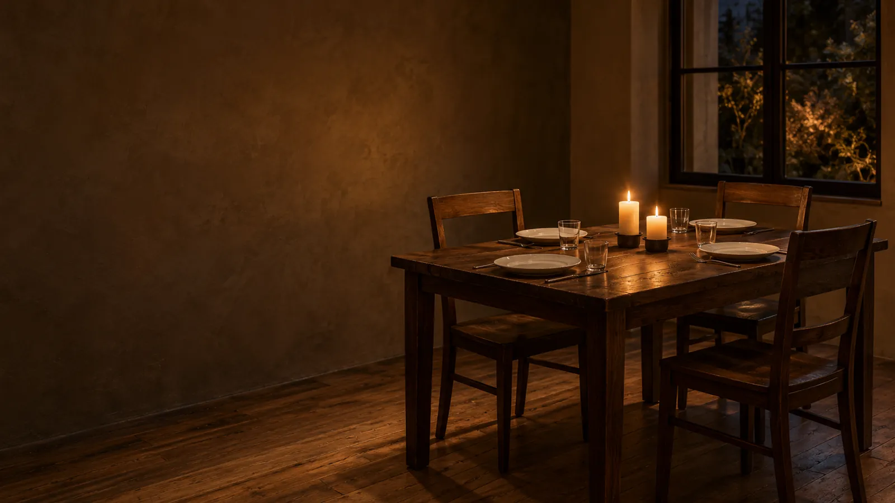

Tasting room · Autumn / winterSix tables, from
Six tables, from
two to six seats.
Two by the window, two in the room and two at the chef’s counter.
Choose a tableExperience10 courses
Evening lengthabout 2.5 h
Our room24 seats
Booking
Choose a date, a time and a table.
The plan shows which tables fit your group.
The summary stays in this window.
Your evening choices.
No table was booked and allergy arrangements are not confirmed. Your choices are not kept when the window closes.
Three parts of the eveningFrom the first light
From the first light
to the last ember.
A candlelit view.

18:30Forest beginning
Chapter mood. Original AI illustration.
01 / 10Before you arriveTime, allergies
Time, allergies
and booking.
How much time should I keep for the evening?
Allow about two and a half hours. The menu times tell the story; the booking summary works out the end from your chosen arrival.
How do I mention allergies?
Add a note with your booking choices. It appears in the summary; the kitchen would confirm any menu changes separately.
Does this summary book a table?
No. Nothing is sent, paid or stored.